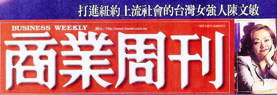

Wendy’s choice
|
 打進紐約上流社會的台灣女強人 沒有陳文敏，季辛吉不進飯店吃飯！ 出身富裕之家，從小生活不虞匱乏的陳文敏，為何甘願在美國的大飯店中從洗廁所的工作開始？ 她又如何一步步爬上餐飲總部總監的位子、並以一名東方女性的身分打進紐約上流社會？ 十二年前，聞名南台灣的「帝國大飯店」董事長陳錦泉夫婦，關在自家的豪宅裡發怒，因為自己的掌上明珠陳文敏負笈美國留學，取得紐約大學學位之後，竟然應徵進入一家老美開的大飯店裡洗廁所，幾個月後，女兒還高興地來信：「老爸，我已經成為『帶位小姐』了。」想著女兒在異鄉成為比服務生還卑微的帶位小姐，陳錦泉就快抓狂了。那幾年，陳錦泉從來不敢告訴親友自己有個在美國飯店「工作」的叛逆女兒，他認為那是一件非常見不得人的事。 然而不到十年光景，陳文敏已打破競爭激烈的紐約五星級飯店業中多項紀錄，成為最年輕的經理、最年輕的總監以及上流圈中聞名的「ＷＭ宴會公司」老闆，尤以一位台灣來的女性，打入紐約上流社會，成為前美國國務卿季辛吉、華爾街銀行總裁們以及巨星麥克．道格拉斯、茱蒂．福斯特等名流的好友。現任﹁紐約國際管理顧問公司﹂總經理陳文敏，寫下一段傳奇的紐約之路。 陳文敏生長在富裕之家，三十年前，經營建材有成的父親在高雄創辦了當時南台灣第一大飯店「帝國大飯店」，轟動一時；當時的陳文敏上下學都是司機專送，帶的便當是飯店廚師們準備的山珍海味，每次兩大盒便當一打開來，同學們都紛紛圍著瞠目結舌。高中畢業後，陳文敏赴美國取得紐約大學的飯店管理學位。畢業前夕，
被分發到紐約排名前三大的五星級大飯店「漢斯理皇宮」 (Hamersley Palace)實習，飯店派給她的工作是洗廁所。 或許表現得不錯，畢業後，陳文敏順利考進這家大飯店，成為五星級大飯店的正式員工，不過，她的工作仍然是掃廁所。不久，餐廳部門的一位白人帶位小姐請辭，飯店主管們便在眾多打掃工裡，挑選出她來遞補缺額。這位東方女性，非常感謝這位比她多出三年工作資歷的「資深」前輩，因此在交接過程中，謙卑請益。 漢斯理皇宮的客人都是紐約上流人士、歐洲以及中東的王公貴族。成為帶位小姐的陳文敏，一下子見識到這些人，非常震撼，她說：「才二十出頭的我，就像海綿一樣，開始大量學習紐約上流階層的談吐、知識及文化！」這樣的工作，她覺得有趣極了，壓根兒不想回台灣。她被訓練為專業的帶位小姐，知道如何用上流社會的方式稱呼部長、大使、王子、總裁等。然而，美國五星級飯店的服務生並不晉用女性。在美國，進餐廳有一個竅門：「如果服務生都是男性，就很貴！」所以，儘管成為帶位小姐，陳文敏的升遷之路仍充滿障礙。 破天荒從帶位小姐升領班 當了兩年帶位小姐後，竟破天荒直接成為領班，引起同事們不滿。被拔擢成為領班，陳文敏說：「因為我願意工作比別人晚，常常有一些領班無法等待晚走的客人時，儘管外頭已有朋友等著接我下班，我還是願意留下來成為最晚走的工作人員。」而且這段期間，陳文敏特別受到中東王公貴族的歡迎。有一位名叫薩烏的中東王子，甚至告訴她：「妳很適合經營飯店，我出一筆錢，妳來我的國家經營飯店吧！」 休息時間，其他領班要她幫忙盤點葡萄酒，陳文敏也願意負擔額外的工作。她說：「多做一點，反而學更多，因為其他領班還教我如何看酒單。」領班必須帶三組服務生，每組三人，共九位。剛開始所有服務生都不願意跟她，因為領班的表現影響到客人給的小費，小費是他們的重要收入來源，大家都認為陳文敏無法獲得客人的青睞。 領班必須取得葡萄酒鑑定執照，陳文敏此時雖已取得品酒執照，但卻因缺少服務生的歷練，有一次替客人開酒時，當場把軟瓶塞開斷，引起飯店主管一陣緊張。為了雪恥，陳文敏自告奮勇加班替吧台的酒保開酒瓶，連續開數個月直到非常熟練為止。後來每回有服務生把軟瓶塞開斷了，反而變成陳文敏來解圍。 說也奇怪，東方女性的陳文敏，竟然頗受客人歡迎，沒多久她這組的收入竟成為全餐廳最高。她分析：「因為凡事為客人著想，手腕要很靈活。」有一次，巨星麥克．道格拉斯與他的導演行色匆匆地走進來，這兩位來頭很大的客人卻沒有穿西裝也沒打領帶，按規定，漢斯理皇宮是拒絕這種客人進入的，除非穿上飯店為客人準備的西裝，否則形同侮辱其他客人。
陳文敏判斷神色匆忙的麥克．道格拉斯此時必定不願穿上飯店的西裝，於是靈機一動，拿著西裝上前披在麥克．道格拉斯的手上。麥克莞爾，相當配合。接著陳文敏刻意為他安排在隱密處，並沒有像一般飯店會把明星放在明顯位置當作﹁招牌﹂。接著專業地問他：「請問有多少時間？」麥克答：「四十分鐘。」陳文敏便迅速為他準備精緻的小餐點，還細心安排一位服務生擋在前面，防止有人上前打擾。 反應機靈贏得客戶死忠 最後，麥克準備離開時，陳文敏調皮地問他：「有沒有人告訴你，說你長得很像麥克．道格拉斯？」麥克聽了笑著說：「有時候會有人這樣說。」陳文敏接著道：「不，你比他帥多了。」惹得麥克哈哈大笑，伸出手與她握手說：「你是我在紐約見過最好的飯店人員。」然後留下五十美元鉅額小費。美國五星級飯店，客人給的小費，五元已經算是相當不錯的價碼。 有了這一次體貼又愉快的用餐經驗，從此麥克到紐約都上漢斯理用餐，並且指定陳文敏為他服務。又有一次，沒有訂位的麥克帶著太太與朋友忽然走進來，由於已有三組客人正在吧台等待，麥克這位巨星勢必要等上許久。陳文敏又靈機一動故意嚷嚷：「麥克先生，您怎麼晚了二十分鐘才來！您的訂位剛被取消，不過，我試著想辦法盡快幫您安排座位。」五分鐘後，便幫麥克第一順位上桌，其他等候客人，就沒有抗議。麥克笑著告訴她：「我看妳可以來好萊塢演戲了！」 又有一回，麥克在餐廳用餐，在另一桌的「第一波斯頓證券」(First Boston)副總裁雷納一直偷看麥克，陳文敏發現了，趁著服務生上菜時，走上前問他：「雷納先生，您的公子上回說想要麥克的簽名，對不對？」雷納會過意高興地說：「對啊，對啊！」就這樣，從未提出要麥克為客人簽名的陳文敏，為雷納做了這件令他永生難忘的事，並且顧全了他這種身分所不能啟齒的心願。 就在陳文敏的死忠客人越來越多時，有一天，她接到剛卸下國務卿的季辛吉秘書南茜打電話來說季辛吉即將蒞臨飯店用餐。當時季辛吉所到之處均引來大批媒體跟蹤，安全與隱密是最重要的事。陳文敏本能地問：「有多少隨從？」安排這種政治人物的位置非常講究，陳文敏說：「一定要安排在門口的對角斜線，讓他面向大門，背靠牆壁，左右與前面三桌均安排安全人員。」 同時，用餐的花費也設身處地著想。陳文敏說：「企業人士比較有錢，餐點可以建議較高級的，但是卸任的政治人物，要為他們設想花費。」於是陳文敏很細心、又很體面地讓季辛吉在這家大飯店完成划算又有面子的宴會。 最重要的是，要研究知名人物的用餐習性，這就是五星級大飯店的「﹁競爭力﹂。陳文敏設法打聽出猶太裔的季辛吉的習性：「不喝酒，愛喝沛綠雅(Perrier)礦泉水，不吃有殼的海鮮，不吃豬肉。」因為季辛吉愛喝沛綠雅，所以，後來紐約的上流社會都喝沛綠雅。
也因為陳文敏的用心，季辛吉後來每回一定要先確認陳文敏在，才願意進漢斯理用餐。甚至整條華爾街的知名總裁與執行長，全都非常喜愛陳文敏，包括美國運通的執行長羅賓森、中東銀行總經理雷夫、國際投資公司總裁貝克，甚至各國駐紐約的大使們，也都成為她的好朋友。有的客人會寧願花時間等候陳文敏來上班。 陳文敏回憶，有一次，一位女士單獨走進來，仔細一看竟然是巨星茱蒂．福斯特。茱蒂很嚴肅，不愛講話，陳文敏一眼就判斷茱蒂是很有個性，不喜歡被煩的人。接著，陳文敏俐落地把她引到角落，前面還有一棵植栽遮住。茱蒂吃得很清淡，不喜歡油膩，另外也喜歡紐約歌劇。大概欣賞陳文敏的善體人意，茱蒂．福斯特後來也 常來，但總是一個人。陳文敏利用機會讓她知道自己也很喜歡歌劇，所以茱蒂有時會邀請陳文敏一齊坐下來聊一聊，詢問紐約的歌劇近況。因為表現優異，有工作狂的陳文敏在當了一年半的領班後，二十八歲便成為餐廳部門的經理，創下紀錄。 三十四歲，又進一步升為餐飲總部的總監，掌理六個餐廳，也刷新紀錄，她這位東方女性的成就，在當時紐約變成大事，她也因此成為【紐約客】雜誌以及【紐約】雜誌的新聞人物。陳文敏也認定：「人生的造化，與自我的努力有絕對關係！」她成為經理時，接到一通電話，是多年前那位請辭的白人帶位小姐打來的，她以請求的口吻說：「有缺人嗎？」陳文敏回答：「據我所知，現在好像沒有經理的缺。」她聽了連忙說：「啊，我不是要應徵經理，我還是應徵帶位小姐。」 當陳文敏距離總經理職務只剩一步之差時，她做了一個決定：「我要自己出來創業。」於是一年後，她跳出來開設「ＷＭ宴會公司」，專門幫上流社會辦理宴會與活動。由於她掌握上流社會的名單，上流圈子都願意讓她接案子，所以營業額驚人，一開始就創下一百萬美元（約新台幣三千一百萬元）的年營業額，獲利率在四成以上。 紐約上流人物非常重視隱私，陳文敏獲得他們的信任，所以不斷增加客源，她說：「為他們辦宴會，還要簽下秘密協定，信守不得攝影、不得錄音、不得將宴會所見所聞洩漏給第三者，否則會吃上官司。」憑著一己之力，陳文敏在紐約不僅成為一家公司的老闆，且擁有三棟公寓、名車及司機、傭人。 一九九五年、應年邁的母親之命，三十八歲的陳文敏決定結束紐約的事業，變賣紐約的資產回台灣，當飛機飛離甘迺迪機場時，她喃喃自語：「當我再回紐約時，我將只變成一位遊客，因為紐約的商場競爭太激烈了，我知道這麼一走，就無法競爭了。」 美式風格注入營建業新生命 陳文敏回台創立「紐約國際管理顧問公司」，引進紐約上流社會新的休閒觀念，也成為這兩年「豪宅」案中有關頂級休閒俱樂部設施的主導人。才短短五年，她已接辦包括青山鎮、天籟、海神及寶成建設總部等的俱樂部施工、管理與服務等二十多
個案子。預估今年營業額為新台幣五千多萬元。陳文敏以美式風格，游走在傳統產業的大老闆中，頗引人矚目。 寶成建設董事長林常榮說：「我認為陳文敏為非常傳統又逐漸走下坡的台灣營建業注入了新生命。」陳文敏說：「在我的眼裡，台灣像是一個十八歲的男孩，卻擁有四十歲的財富。我有一個想法，想讓台灣變成一個四十歲，成熟又有文化的男人。 |